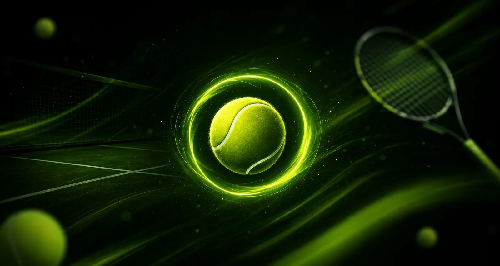

01
Nájdi trénera vo svojom okolí
Hľadaj podľa mesta, ceny a hodnotení. V profile trénera vidíš kurt, cenník aj voľné termíny.

Nájdi trénera vo svojom okolí, rezervuj tréning na pár ťuknutí a spoznaj ľudí, ktorých baví to isté čo teba.
Appka je zadarmo. Platíš až vtedy, keď tréner termín potvrdí.
Tá istá appka, dva pohľady. Prepni si ten svoj.
Hľadaj podľa mesta, ceny a hodnotení. V profile trénera vidíš kurt, cenník aj voľné termíny.
Ťukneš na voľnú hodinu v kalendári trénera a odošleš žiadosť. Zatiaľ neplatíš nič.
Keď tréner žiadosť potvrdí, zaplatíš kartou priamo v appke. Konečnú sumu vidíš vopred.
Nikdy nevieš, kedy sa mu uvoľní termín — a uvoľnené hodiny na poslednú chvíľu ponúka so zľavou.
Za každý odtrénovaný tréning padne loptička. V nej je šanca na nového avatara a posúva ťa na vyšší level.
Ak vieš hrať a baví ťa to ukázať ďalším, prepneš sa v profile na trénera. Licenciu na to nepotrebuješ — stačí cena a hodiny, kedy máš voľno.
Ľudia ťa nájdu podľa mesta, ceny a hodnotení, aj keď o tebe dovtedy nepočuli. Nemusíš si zháňať klientov ani inzerovať — stačí mať voľné hodiny v kalendári.
Servisný poplatok je súčasťou ceny, ktorú uvedieš — hráč ju zaplatí celú a ty k nej nič nedoplácaš. Platbu uvoľňujeme 12 hodín po tréningu a peniaze máš na výber do týždňa od zaplatenia — kedy si ich pošleš na účet, je na tebe.
Keď hráč zruší menej než 6 hodín pred tréningom alebo nepríde, celá suma zostáva tebe. Pri zrušení 6 až 16 hodín vopred ti zostáva polovica. Čas, ktorý si si na neho vyhradil, ti teda nikto nezoberie zadarmo.
Vypíšeš voľnú hodinu, pokojne so zľavou, a hráči ju uvidia okamžite. Prázdne miesto v kalendári sa tak zaplní aj na poslednú chvíľu.
Cena, kurt, jazyky a hodiny, kedy máš voľno. Hráči ťa nájdu podľa mesta aj podľa ceny.
Kalendár, rezervácie aj chat s hráčom máš na jednom mieste. Potvrdenie je jedno ťuknutie.
Štatistiky zárobkov, obsadenosti a najaktívnejších hráčov. A k tomu predplatené balíčky hodín so zľavou.
Nie každý tréner ti sadne na prvýkrát. V Matchballe si prejdeš trénerov vo svojom meste, prečítaš si hodnotenia od ľudí, ktorí u nich naozaj trénovali, a skúsiš viacerých — kým nenájdeš toho svojho.
Ak vieš hrať a baví ťa to ukázať ďalším, staň sa trénerom. Licenciu na to nepotrebuješ — stačí profil, cena a voľné hodiny. Nájdeš si hráčov vo svojom okolí a zarobíš si tým, čo aj tak robíš rád.
U trénera, ku ktorému chodíš, si kúpiš balíček hodín so zľavou. Dá sa aj darovať: obdarovaný dostane hodiny na svoje meno a chodí, kedy mu to vyhovuje. A za každý odtrénovaný tréning zbieraš loptičky a odmeny.
Chceme, aby si tu našiel nielen trénera, ale aj parťáka na tenis na tvojej úrovni — a aby sa dalo čoskoro hrávať aj turnaje. Zatiaľ zbierame záujem: v appke ťukni na Mám záujem a ozveme sa, keď to v tvojom meste spustíme.
Cenu tréningu si určuje každý tréner sám. K nej sa pripočíta servisný poplatok 5 % + 0,30 €, ktorý je súčasťou sumy zobrazenej pred zaplatením.
Hráč vždy vidí konečnú sumu vopred; žiadne skryté poplatky neúčtujeme.
Tréner môže ponúkať predplatené balíčky 5, 10 alebo 20 hodín so zľavou. Tréning z balíčka zoberie presne toľko času, ako trvá.
Balíček sa viaže na konkrétneho trénera a platí 12 mesiacov. Keď si kúpiš ďalší, predĺži sa platnosť všetkých tvojich balíčkov na 12 mesiacov — aj tých u iného trénera.
Balíček sa dá aj darovať. Skupinové tréningy sa z neho platiť nedajú, tie sa platia kartou.
Zrušenie 16 hodín a viac pred tréningom je zadarma a hráčovi vraciame celú sumu. Pri zrušení 6 až 16 hodín pred tréningom si tréner ponecháva 50 % a zvyšok vraciame. Menej než 6 hodín pred tréningom alebo pri neúčasti si tréner ponecháva celú sumu.
Do 60 minút od vytvorenia rezervácie ju možno zrušiť vždy zadarmo.
Peniaze držíme, kým sa tréning neuskutoční. Trénerovi ich uvoľňujeme 12 hodín po tréningu, alebo hneď, ako hráč potvrdí, že prebehol v poriadku.
Ak niečo nebolo v poriadku, hráč to môže v tejto lehote nahlásiť a peniaze zostanú zadržané do vyriešenia.
Tréner má sumu na výber do týždňa od zaplatenia a na svoj účet si ju pošle, keď chce. Zo svojej ceny neplatí nič — servisný poplatok je nad ňu a platí ho hráč. Žiadny mesačný ani vstupný poplatok neexistuje.
Výber od 100 € je zadarmo — poplatok za výber uhradíme za teba. Menší výber stojí 2 €, a to len ten prvý v mesiaci: po ňom je každý ďalší výber v tom mesiaci zadarmo, nech je akokoľvek veľký.
Toľko rokov života navyše mali v dánskej štúdii tenisti oproti ľuďom bez pohybu. Bedminton pridal 6,2 roka a futbal 4,7 — ale cyklistika 3,7, plávanie 3,4 a beh 3,2.
Prvé tri majú spoločné to, že sa nedajú hrať sám. Vedúci autor štúdie to pripisuje práve tomu: pravidelná skupina dáva okrem pohybu aj ľudí, na ktorých sa dá spoľahnúť.
Copenhagen City Heart Study, Mayo Clinic Proceedings 2018. 8 577 ľudí sledovaných dvadsaťpäť rokov; výsledok platí aj po zohľadnení veku, príjmu a vzdelania.
O toľko nižšie riziko úmrtia z akejkoľvek príčiny mali ľudia, ktorí hrávajú tenis, squash alebo bedminton. Pri chorobách srdca a ciev je rozdiel ešte väčší — 56 %.
Iná krajina a iná vzorka než pri dánskej štúdii, výsledok rovnaký. To je na tom to podstatné: nejde o jedno meranie, ktoré vyšlo náhodou.
Oja a kol., British Journal of Sports Medicine 2017. 80 306 dospelých v Anglicku a Škótsku, sledovaní v priemere deväť rokov.
O toľko vyššiu hustotu kostí v driekovej chrbtici namerali profesionálnym tenistom oproti ľuďom, ktorí nešportujú.
V hrajúcej ruke majú asi o pätinu viac kostnej hmoty než v druhej — kosť sa prispôsobí záťaži, ktorú dostáva. Preto sa tenis odporúča aj ako prevencia rednutia kostí.
Bone mineral content and density in professional tennis players, 1998; novšia metaanalýza v PLOS One 2025 dochádza k rovnakému záveru.
Tenis je hra, ktorú nehráš sám. Matchball je miesto, kde nájdeš trénera, parťáka aj dôvod vrátiť sa na kurt. Appka je zadarmo, platíš len za tréning.